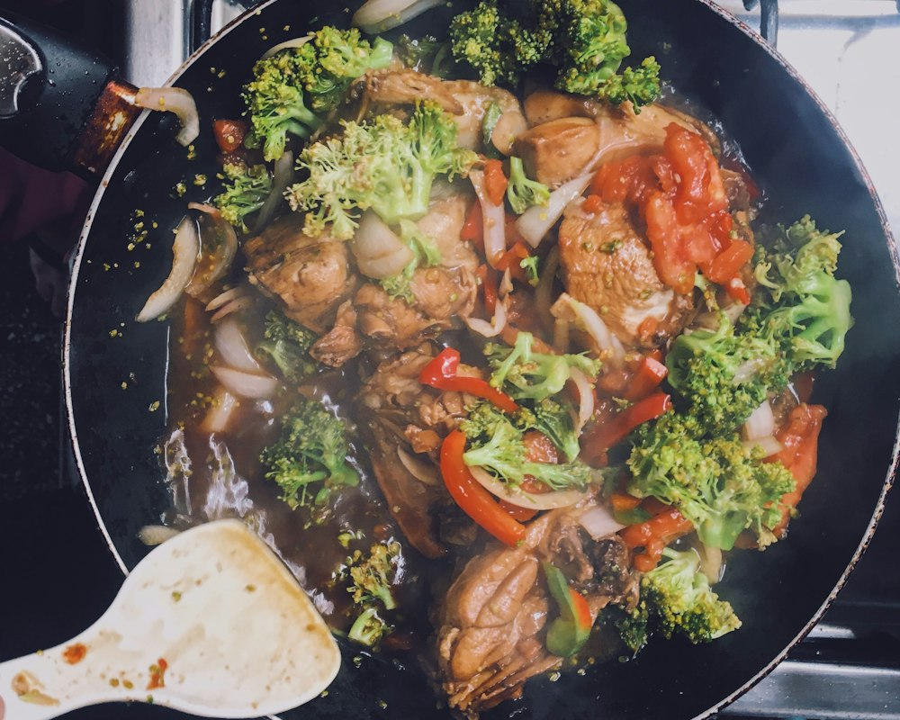

Des légumes croquants, une viande tendre, une sauce brillante et parfumée : le chop suey fait partie de ces plats que l'on adore dès la première bouchée. À Maurice comme à La Réunion, il est présent sur toutes les tables de fête et dans tous les buffets. Voici d'où il vient, ce qu'on y met, et pourquoi c'est un excellent choix pour nourrir un groupe.
Un plat venu de la cuisine chinoise de Maurice
Le chop suey est arrivé dans l'océan Indien avec les familles d'origine chinoise, principalement venues du sud de la Chine. À Maurice, la communauté sino-mauricienne a fait de ce plat un classique du quotidien, au même titre que le riz frit ou le mine frites. Au fil des années, il s'est mélangé aux goûts de l'île : un peu plus de gingembre, un peu d'ail, et parfois une pointe de piment servie à côté.
Le principe reste simple : des légumes coupés finement, sautés à feu vif avec une viande ou un poisson, puis liés par une sauce légèrement épaissie. Le résultat est à la fois léger et gourmand.
Chop suey poulet ou chop suey poisson ?
Au Vinday, on prépare les deux versions :
- Le chop suey poulet : le plus demandé, doux et généreux, il plaît aux petits comme aux grands.
- Le chop suey poisson : plus délicat, parfait pour varier un buffet ou pour les invités qui ne mangent pas de viande.
Pour un grand groupe, proposer les deux côte à côte est souvent la meilleure idée : chacun choisit selon ses envies.
Ce qu'on trouve dans un chop suey
Chaque cuisine a ses habitudes, mais on retrouve en général du chou, des carottes, des oignons, parfois des champignons ou des pois gourmands, le tout coupé en lamelles pour cuire vite et rester croquant. La sauce, à base de sauce soja et d'aromates, nappe l'ensemble sans le noyer. On le sert le plus souvent avec du riz blanc ou à côté d'un riz frit ou de farata.
Un plat idéal pour les buffets et les box repas
Le chop suey a tout pour plaire aux organisateurs :
- Il se garde bien au chaud, ce qui est précieux pour un buffet qui dure.
- Il est équilibré, avec beaucoup de légumes, ce qui rassure lors d'un déjeuner d'équipe.
- Il se marie avec tout : briani, mine frites, carri poulet, petits pains garnis.
En pause déjeuner au bureau, il trouve naturellement sa place dans une box : notre guide des box repas en entreprise vous explique comment organiser ça. Pour une grande fête, il complète très bien un briani pour 50, 100 ou 400 personnes.
Végétarien, sans porc, allergies : on adapte
Le chop suey se décline facilement en version végétarienne, et même végétalienne, avec uniquement des légumes. Il convient aussi aux invités qui ne mangent pas de porc. En cas d'allergie, il suffit de nous prévenir au moment de la commande : on adapte la recette pour que tout le monde mange sereinement.
Un traiteur mauricien qui livre partout à La Réunion
Le Vinday cuisine à Bernica, sur les hauts de Saint-Gilles, à Saint-Paul, et livre partout sur l'île, de 10 à 400 personnes : en entreprise, à domicile ou même à la plage. De la simple barquette au repas complet entrée, plat, dessert, avec vaisselle jetable ou vraies assiettes, on s'adapte à votre événement. Pull Up Événements, les Missions Locales de La Réunion, BCI (Bourbon Car Industrie) et de nombreuses entreprises de l'île nous ont déjà fait confiance.
Envie d'un bon chop suey pour votre prochain repas d'équipe ou votre fête de famille ? Petits prix, devis gratuit et menu adapté à votre budget. Lancez votre demande avec la commande guidée, ou appelez-nous au 06 92 27 02 37.
Une envie de cuisine mauricienne ?
De la simple barquette au repas complet, de 10 à 400 personnes, livré partout sur l'île. Devis gratuit, adapté à votre budget.